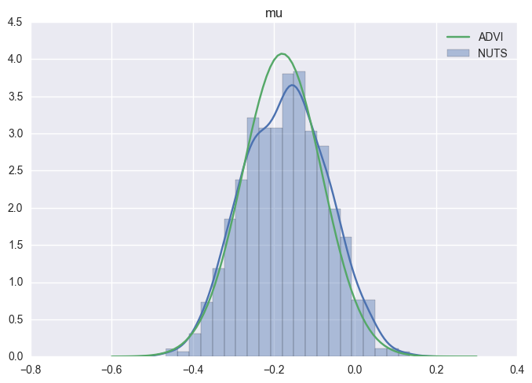
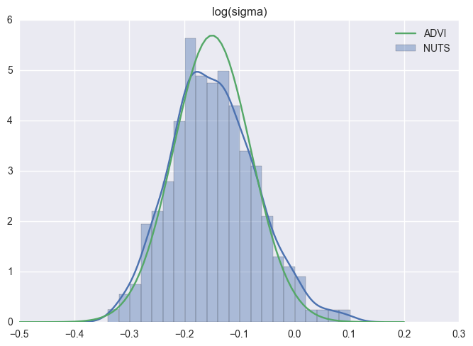
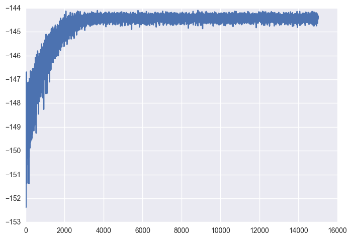

In [1]:
%pylab inline
import numpy as np
from scipy import stats
import pymc3 as pm
import seaborn as sns
import matplotlib.pyplot as plt
Populating the interactive namespace from numpy and matplotlib
In [2]:
data = np.random.randn(100)
In [3]:
with pm.Model() as model:
mu = pm.Normal('mu', mu=0, sd=1, testval=0)
sd = pm.HalfNormal('sd', sd=1)
n = pm.Normal('n', mu=mu, sd=sd, observed=data)
In [4]:
means, sds, elbos = pm.variational.advi(model=model, n=20000, accurate_elbo=True)
Average ELBO = -144.42: 100%|██████████| 20000/20000 [01:41<00:00, 197.93it/s]
Finished [100%]: Average ELBO = -144.43
In [5]:
with model:
step = pm.NUTS()
trace = pm.sample(1000, step)
100%|██████████| 1000/1000 [00:03<00:00, 273.24it/s]
In [6]:
print(trace['mu'].mean())
print(trace['sd_log_'].mean())
print(trace['mu'].std())
print(trace['sd_log_'].std())
-0.17169500302
-0.00961214148597
0.101946369818
0.0678575947719
In [7]:
ax = sns.distplot(trace['mu'], label='NUTS')
xlim = ax.get_xlim()
x = np.linspace(xlim[0], xlim[1], 100)
y = stats.norm(means['mu'], sds['mu']).pdf(x)
ax.plot(x, y, label='ADVI')
ax.set_title('mu')
ax.legend(loc=0)
/Users/fonnescj/anaconda3/envs/dev/lib/python3.5/site-packages/statsmodels/nonparametric/kdetools.py:20: VisibleDeprecationWarning: using a non-integer number instead of an integer will result in an error in the future
y = X[:m/2+1] + np.r_[0,X[m/2+1:],0]*1j
Out[7]:
<matplotlib.legend.Legend at 0x116431e80>

In [8]:
ax = sns.distplot(trace['sd_log_'], label='NUTS')
xlim = ax.get_xlim()
x = np.linspace(xlim[0], xlim[1], 100)
y = stats.norm(means['sd_log_'], sds['sd_log_']).pdf(x)
ax.plot(x, y, label='ADVI')
ax.set_title('log(sigma)')
ax.legend(loc=0)
/Users/fonnescj/anaconda3/envs/dev/lib/python3.5/site-packages/statsmodels/nonparametric/kdetools.py:20: VisibleDeprecationWarning: using a non-integer number instead of an integer will result in an error in the future
y = X[:m/2+1] + np.r_[0,X[m/2+1:],0]*1j
Out[8]:
<matplotlib.legend.Legend at 0x1174935c0>

In [9]:
import matplotlib.pyplot as plt
plt.plot(elbos[5000:])
Out[9]:
[<matplotlib.lines.Line2D at 0x1181f4710>]
